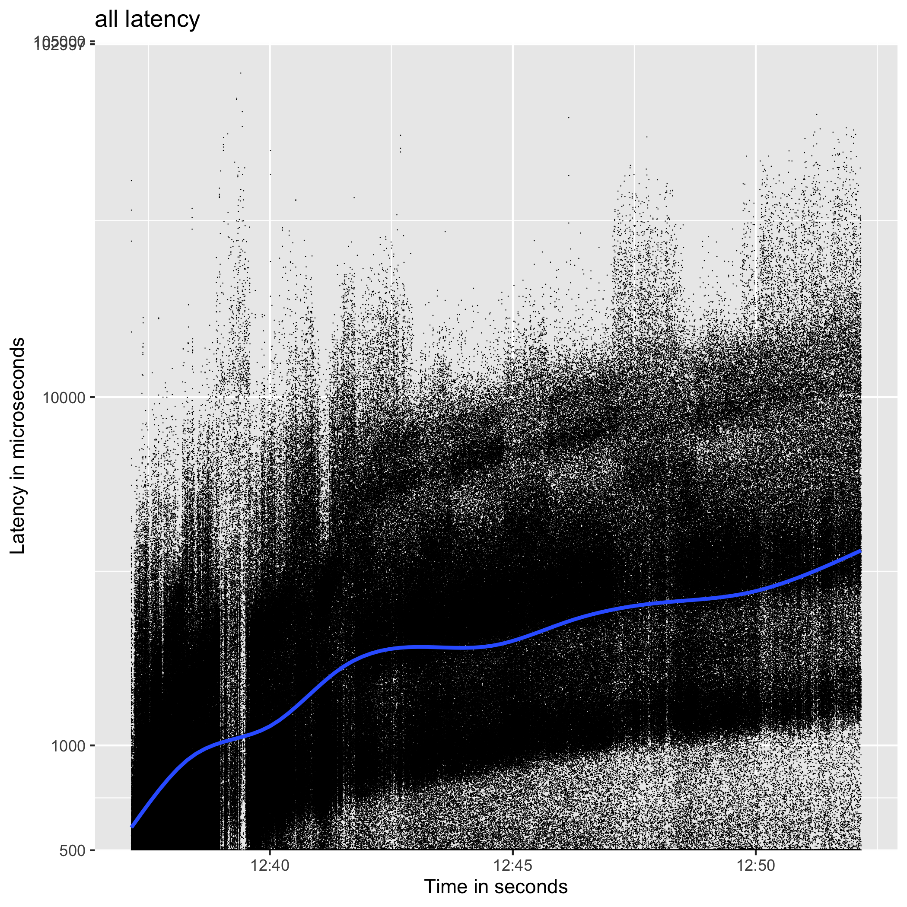
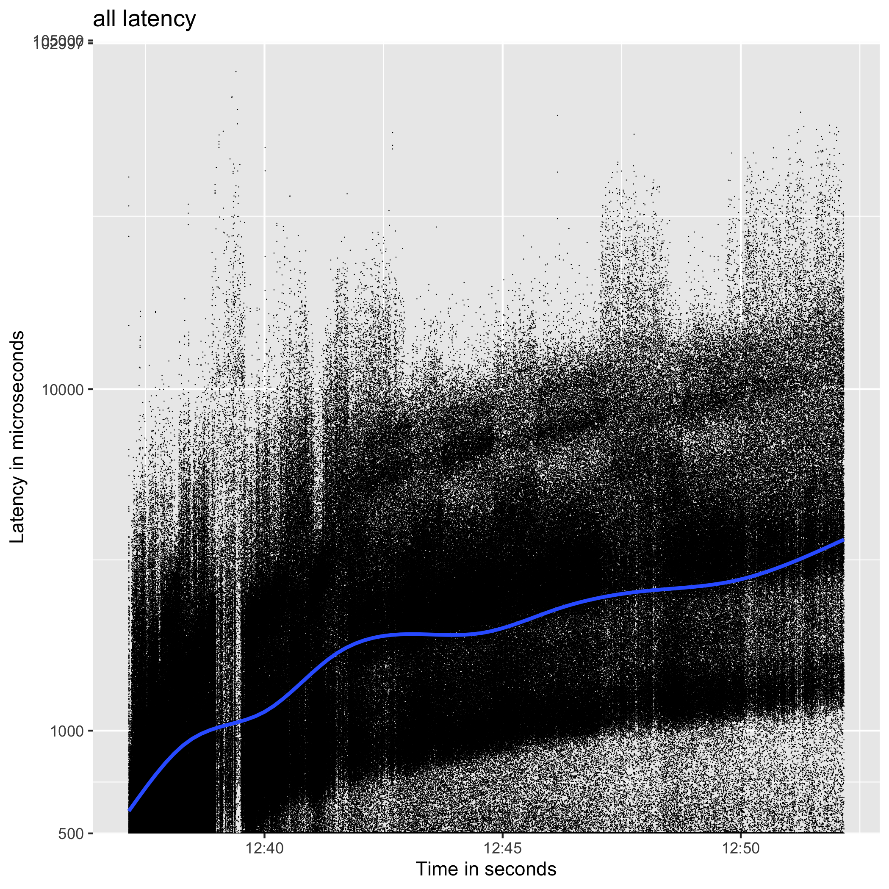
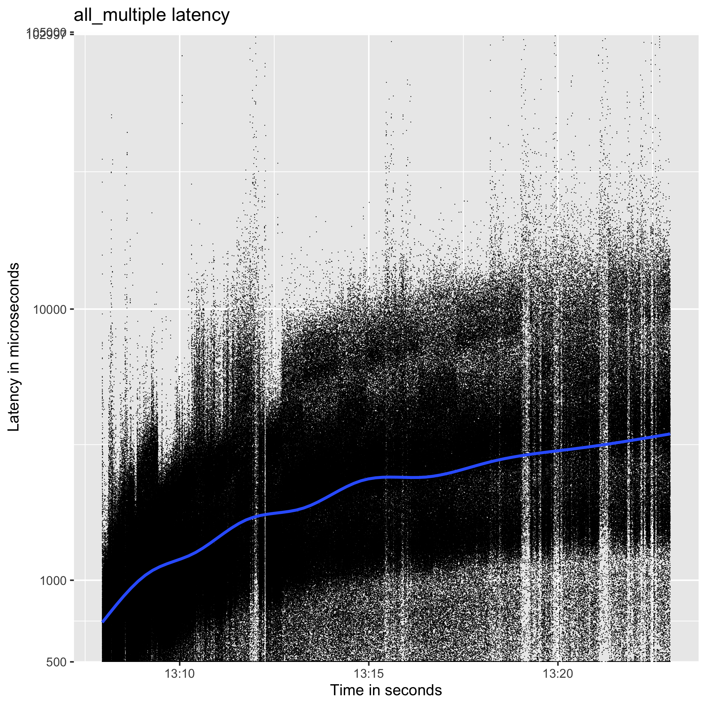
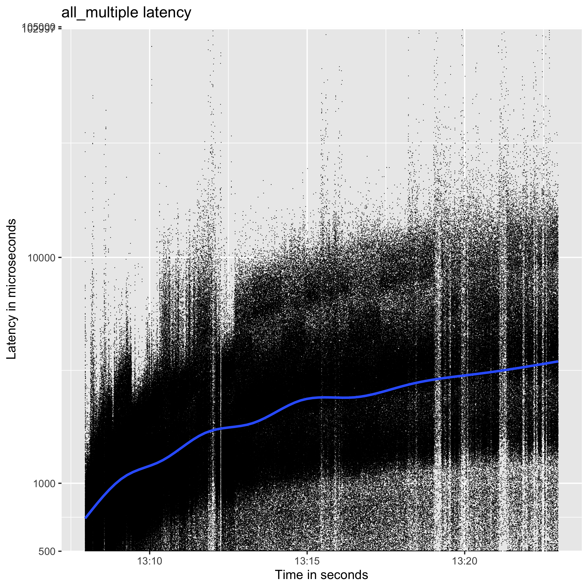

How to benchmark riak_core_lite application?
How to configure rcl_bench?
rcl_bench is a benchmarking tools for key-value store application. It is a lighter verison of basho_bench and it is easy to use.
To use it, first clone the rcl_bench repository.
git clone git@github.com:riak-core-lite/rcl_bench.git
- Configure rcl_bench
To configure rcl_bench, you need to modify the following in rcl_bench repo.
config/sys.config
config/vm.args
The sys.config for benchmarking rclref was below.
{rcl_bench, [
%% Mode of load generation:
%% max - Generate as many requests as possible per worker
%% {rate, Rate} - Exp. distributed Mean reqs/sec
%% {rate, max} - as fast as possible
{mode, {rate, max}},
%% Base test output directory
{test_dir, "tests"},
%% Test duration (minutes)
{duration, 15},
%% Number of concurrent workers
{concurrent, 4},
%% Operations (and associated mix)
{operations, [{get_own_puts, 3},
{put, 10},
{get, 2}]},
%% Key generators
%% {uniform_int, N} - Choose a uniformly distributed integer between 0 and N
{key_generator, {uniform_int, 100000}},
%% Value generators
%% {fixed_bin, N} - Fixed size binary blob of N bytes
{value_generator, {fixed_bin, 100}},
{random_algorithm, exsss},
{random_seed, {1,4,3}},
{ip, '127.0.0.1'},
{port, 8080}
]}
The important part in the snippet above is the operations tuple.
%% Operations (and associated mix)
{operations, [{get_own_puts, 3},
{put, 10},
{get, 2}]},
Associated mix is the weight of the operations. This means that on average, it will execute get_own_puts 3/15, put 10/15, get 2/15. The contents of the operations are implemented in the rcl_bench_dirver.erl module.
- Implement more operations in rcl_bench_dirver.erl
If new operations are added and you want to benchmark them, you need to add it in the sys.config as well.
For testing rclref, the following operations are implemented.
get_own_puts: get a stored value
get: get a value
put: put a value
- Run the benchmark after starting the database application.
Start rclref and then run the follwoing in rcl_bench repository.
make run
Where to find the results?
The results of the benchmark are stored as csv in rcl_bench/_build/default/rel/rcl_bench/tests. The current results can be found in the current directory as well. Run the R script in the R directory to visualize the results by reading the csvs in the current directory.
Rscript latency.R TITILE_OF_CSV
Rscript throughput.R TITLE_OF_CSV
To see the results of all the operations, concatenate the result csvs in the current directory.
cat get_single.csv get-own-puts_single.csv put_single.csv | sed '2, $s/timestamp, unit, microseconds//g' >> all_single.csv
Then you can visualize by the following commnand in the R directory.
Rscript throughput.R all_single
Rscript latency.R all_single
This will create png file of the result.
Results of benchmarking rcl_bench
The results of benchmarking rclref were the follwoing.
Environment
| Processor Name | Dual-Core Intel Core i5 |
|---|---|
| Processor Speed | 2 GHz |
| Number of Processors | 1 |
| Total Number of Cores | 2 |
| L2 Cache (per Core) | 256 KB |
| L3 Cache | 4 MB |
| Memory | 8 GB |
Single node
A single node cluster with N=3, R=1, W=1 using ETS as backend.
 

Multi node
3 node cluster with N=3, R=1, W=1 using ETS as backend.
 
